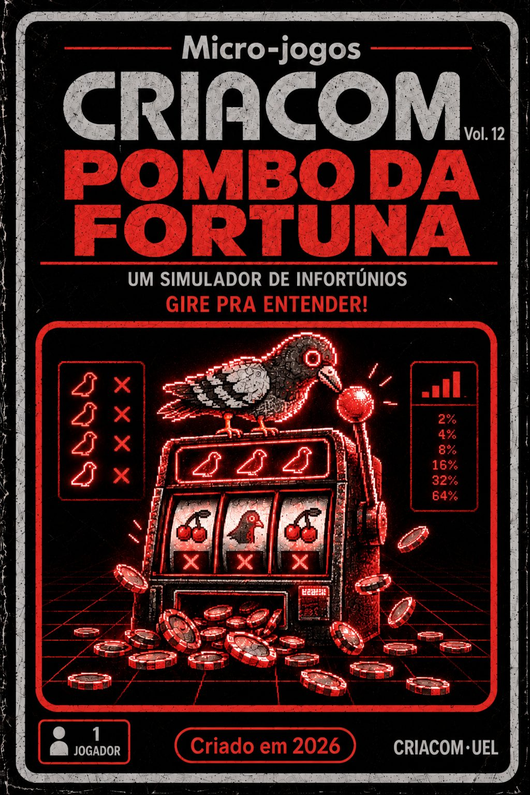

POMBO DA FORTUNA
UM SIMULADOR DE INFORTÚNIOS · GIRE PRA ENTENDER!
Um caça-níquel construído para mostrar, no seu próprio comportamento, o que os esquemas de reforço fazem com a taxa e a persistência de uma resposta.
Aqui você é o pombo. A resposta é puxar a alavanca. O prêmio é o reforço, e quem decide quando ele chega não é a sorte: é uma regra. Todo o resto (luzes, moedas, níveis) é estímulo.
▶ MODO SUJEITO
Você joga sem saber as regras, como um organismo na caixa experimental. Jogue o quanto quiser e pare quando quiser. No fim, você tenta adivinhar a regra e vê seu próprio registro cumulativo.
▶ MODO LABORATÓRIO
Você é experimentador e sujeito ao mesmo tempo. Escolha o esquema, mude-o durante a sessão, ligue e desligue cada camada de estímulos da máquina e acompanhe o registro cumulativo em tempo real.
ATENÇÃO. Este simulador reproduz, com fichas de mentira, as contingências que os cassinos de celular usam com dinheiro de verdade. Jogos de aposta podem produzir dependência e dívidas. Ao final da sessão, você vê a conta.
Teclado: ESPAÇO puxa a alavanca. Use som. Simulador didático: não há dinheiro, aposta ou prêmio real.
FORTUNA
VOL. 12
ESQUEMA EM VIGOR
CAMADAS DE ESTÍMULOS
REGISTRO CUMULATIVO
A pena sobe a cada resposta e volta à base a cada 40. Linha plana = pausa; linha íngreme = taxa alta. Cada partida dura de 1,7 a 3,2 s, e o ritmo máximo fica em torno de 20 a 30 respostas por minuto.
FIM DA SESSÃO
Durante a sessão, a máquina mudou de regra pelo menos duas vezes. Pense no trecho do meio. Qual regra decidia quando o prêmio vinha?
SEU REGISTRO CUMULATIVO
DADOS POR FASE
OS PADRÕES CLÁSSICOS
Registros idealizados, no espírito das figuras de Ferster e Skinner (1957). Compare com o seu. Os esquemas em verde apareceram na sua sessão. Como cada partida desta máquina dura alguns segundos, a taxa máxima é baixa; as diferenças entre esquemas aparecem mais nas pausas do que na inclinação.
UMA CAIXA DE SKINNER NO SEU BOLSO
Você acabou de passar alguns minutos dentro de uma caixa experimental. Os mesmos arranjos que controlaram as suas puxadas aqui operam, com dinheiro de verdade, em aplicativos de cassino como o "tigrinho", abertos no celular 24 horas por dia. Em 2024, o Banco Central estimou que entre R$ 18 bilhões e R$ 21 bilhões saíam todo mês, só por Pix, para casas de apostas, e que cerca de 5 milhões de beneficiários do Bolsa Família enviaram R$ 3 bilhões a elas em agosto daquele ano (Banco Central do Brasil, 2024). Em setembro de 2025, 35% dos apostadores ouvidos pelo PoderData disseram ter se endividado com apostas, o dobro do registrado um ano antes (Poder360, 2025).
1. A PRÓXIMA SEMPRE PODE SER A PREMIADA
Em razão variável, nenhuma puxada é segura para ser a última. Parar significa abrir mão de um prêmio que pode estar a uma jogada de distância, e por isso esse esquema produz taxas altas, pausas curtas e nenhum ponto natural de parada. Skinner (1953) apontou os jogos de azar como o exemplo cotidiano desse arranjo. Olhe o seu registro cumulativo: a linha que sobe sem descanso é o desenho do comportamento que a máquina foi feita para produzir.
2. O PRÊMIO CHEGA EM SEGUNDOS. A DÍVIDA CHEGA NA FATURA.
O prêmio, as luzes e a fanfarra chegam menos de três segundos depois da resposta. A perda chega diluída, alguns reais por vez, e só aparece somada no extrato, dias ou semanas depois. Consequências imediatas controlam o comportamento com muito mais força do que consequências atrasadas, mesmo quando as atrasadas são muito maiores. Rachlin (1990) propôs que o jogador avalia sequências de apostas que terminam num ganho, e não cada perda isolada. Na hora de puxar a alavanca, a perda acumulada simplesmente não está presente.
3. A MÁQUINA COMEMORA QUANDO VOCÊ PERDE
Perdas disfarçadas de ganho tocam a mesma música da vitória e devolvem menos do que você apostou; jogadores reagem a elas como se tivessem ganhado (Dixon et al., 2010). Quase-acertos mostram o prêmio passando a um símbolo de distância e aumentam a persistência no jogo (Reid, 1986). Moedas, gemas, níveis e números que sobem foram pareados com o prêmio e passaram a reforçar por conta própria (Skinner, 1953). Com essas camadas ligadas, boa parte dos estímulos que você recebeu nesta sessão foi entregue em jogadas que deram prejuízo.
4. COMEÇAR GANHANDO É A ISCA
No modo sujeito, os primeiros prêmios vieram a cada puxada. Depois, a regra mudou sem aviso e, no fim, os prêmios pararam de vez. Uma história de reforço intermitente torna a resposta muito mais resistente à extinção do que uma história de reforço contínuo (Humphreys, 1939). Quem começa ganhando, por sorte ou por bônus de boas-vindas, aprende que a máquina paga e depois não consegue discriminar o momento em que ela parou de pagar. Compare o seu registro na fase de extinção: quantas puxadas você deu depois do último prêmio?
5. APOSTAR PARA RECUPERAR
Depois de perder, apostar de novo para recuperar o dinheiro produz, quando dá certo, alívio, isto é, a retirada de uma situação aversiva. Esse reforço negativo fortalece justamente o comportamento de apostar mais depois de perder. A dívida passa a manter o jogo que a criou, e cada nova perda aumenta o valor reforçador da próxima tentativa de recuperação.
6. O CASSINO ESTÁ NO SEU BOLSO
Um cassino físico fecha, fica longe, tem testemunhas e exige tirar dinheiro da carteira. O cassino no celular não tem nenhuma dessas barreiras. Ele está aberto às três da manhã, cabe no intervalo do ônibus, recebe depósito por Pix em segundos e envia notificações que funcionam como estímulos discriminativos para voltar a jogar. O custo de resposta para começar uma sessão é praticamente zero. Neste jogo, o pombo faz o papel desses estímulos: aparece quando você para de responder, comemora as perdas e tenta impedir a sua saída. Sem interrupções naturais, não há tempo para a extinção agir nem para que outras fontes de reforço, como trabalho, estudo, sono e convivência, disputem o seu comportamento.
7. A DÍVIDA SILENCIOSA
Fichas, créditos e "saldo" afastam o jogador do dinheiro real. A perda não aparece como uma conta a pagar; aparece como um número que oscila e que às vezes sobe com fanfarra. Quando o saldo acaba, o próximo depósito sai do cartão de crédito, do cheque especial ou de um empréstimo, e a perda vira dívida com juros. Nada na tela registra esse momento. Segundo estimativa da Confederação Nacional do Comércio, as apostas desviaram R$ 143,8 bilhões do consumo das famílias entre janeiro de 2023 e março de 2026 (Forbes Brasil, 2026).
8. ISSO TEM NOME
O transtorno do jogo é classificado no DSM-5 na mesma seção dos transtornos relacionados a substâncias (American Psychiatric Association, 2013). A análise do comportamento mostra por que ele não se explica por fraqueza de caráter: as contingências desses aplicativos são desenhadas, testadas e ajustadas por equipes profissionais para manter as pessoas respondendo. Identificar essas contingências é o primeiro passo para escapar do controle delas.
UMA ÚLTIMA PALAVRA DO POMBO
REFERÊNCIAS
American Psychiatric Association. (2013). Diagnostic and statistical manual of mental disorders (5th ed.).
Banco Central do Brasil. (2024). Análise técnica sobre o mercado de apostas online no Brasil e o perfil dos apostadores (Estudo Especial nº 119). bcb.gov.br
Dixon, M. J., Harrigan, K. A., Sandhu, R., Collins, K., & Fugelsang, J. A. (2010). Losses disguised as wins in modern multi-line video slot machines. Addiction, 105(10), 1819–1824.
Ferster, C. B., & Skinner, B. F. (1957). Schedules of reinforcement. Appleton-Century-Crofts.
Forbes Brasil. (2026, maio). O ralo das bets: apostas passaram a drenar renda, elevar a inadimplência e sufocar o varejo. forbes.com.br
Humphreys, L. G. (1939). The effect of random alternation of reinforcement on the acquisition and extinction of conditioned eyelid reactions. Journal of Experimental Psychology, 25(2), 141–158.
Poder360. (2025). Apostadores que dizem ter se endividado por bets vai a 35% [Pesquisa PoderData, 27 a 29 set. 2025]. poder360.com.br
Rachlin, H. (1990). Why do people gamble and keep gambling despite heavy losses? Psychological Science, 1(5), 294–297.
Reid, R. L. (1986). The psychology of the near miss. Journal of Gambling Behavior, 2(1), 32–39.
Skinner, B. F. (1953). Science and human behavior. Macmillan.